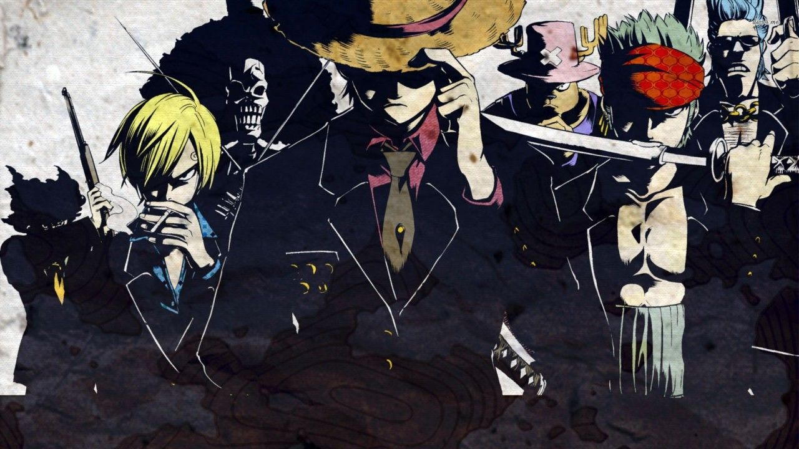
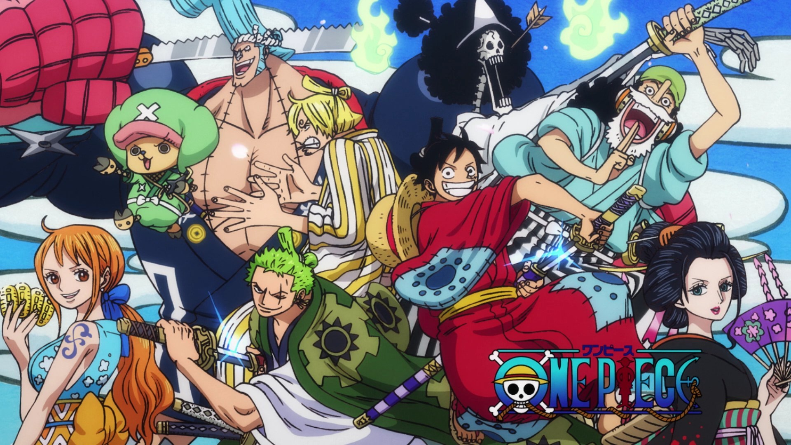
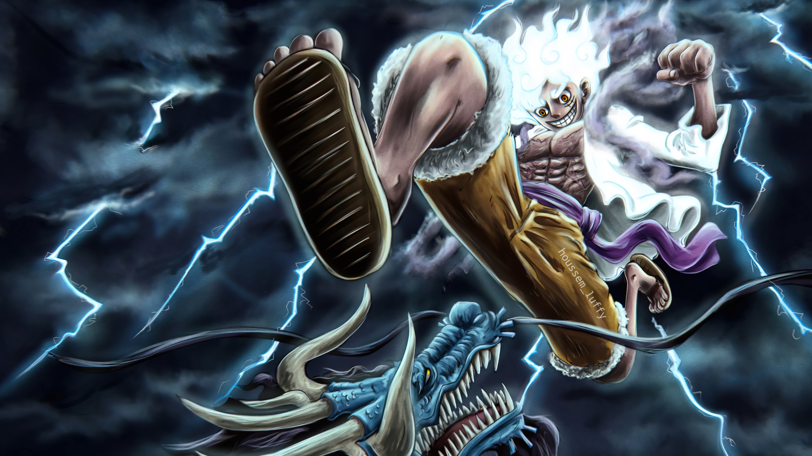
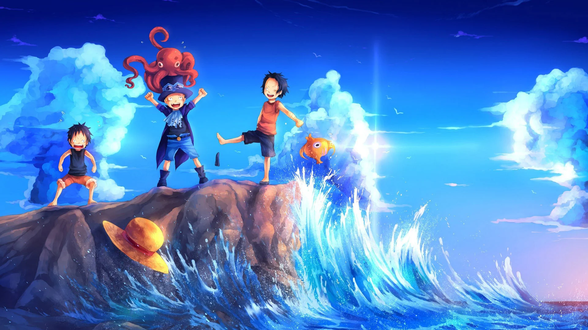
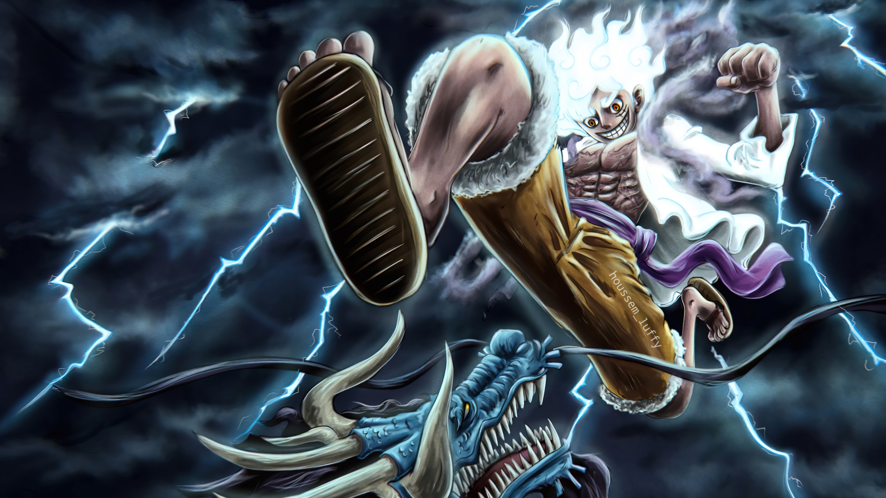
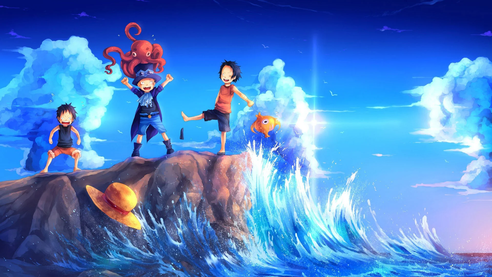
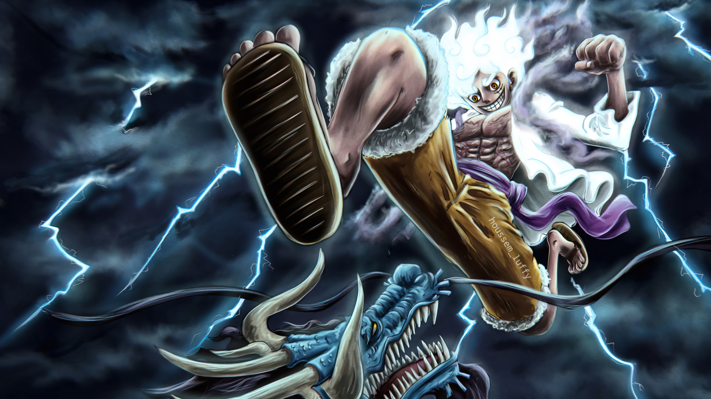
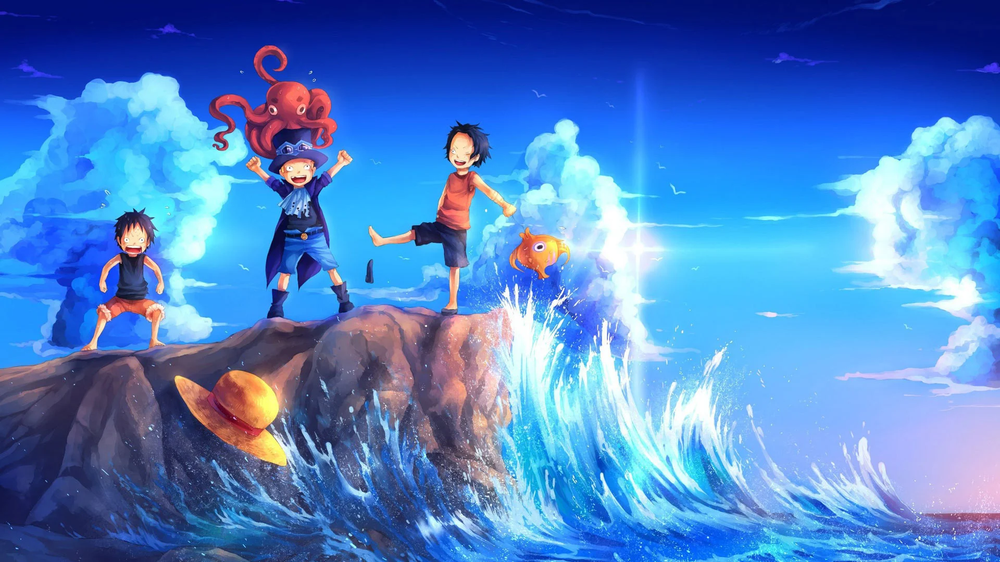

 





A série foca em Monkey D. Luffy, um jovem feito de borracha, que, inspirado em seu ídolo de infância, o poderoso pirata Shanks, o Ruivo, parte em uma jornada do mar do East Blue para encontrar o tesouro mítico, o One Piece, e proclamar-se o Rei dos Piratas.